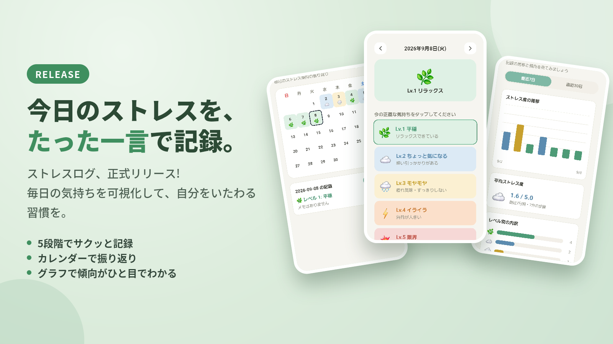

開発実績 Selected Work
01 — 03
ストレスきろく
Stress Log
日々の気分や感情の波を直感的に記録・可視化できるメンタルケアアプリ。完全ローカル保存によるプライバシー保護と広告なしのミニマル設計を採用し、日々のセルフモニタリングをストレスフリーに継続できます。
A minimal mental self-care and emotion-tracking app to log and visualize stress levels with a single tap. Features complete local-only data storage for absolute privacy and zero ads for seamless daily monitoring.

実務電卓
Practical Calculator
カシオ実機のキー配列と打鍵感を忠実に再現した簿記・税理士試験受験生向け電卓アプリ。実務で求められる確実なキーロールオーバー処理と、ユーザーコミュニティからのフィードバックに基づく即日パッチ配信を実施しています。
A Casio-layout, tactile-feel calculator app designed for accounting and tax exam candidates. Optimized for reliable key roll-over handling, undergoing rapid iteration and bug triage directly from tester feedback.

AIチャットボットシステム (RAG)
Campus AI Concierge System (RAG)
FastAPI、Supabase (pgvector)、LangSmithで構築したRAGシステム。膨大な履修要覧や学内諸規程を高精度にインデックス化。OCや経済学科教員向けに試験運用を行い、実際の問い合わせログを元に検索、回答精度を継続的にチューニングしています。
An enterprise-grade RAG system built on FastAPI, Supabase (pgvector), and LangSmith, indexing thousands of pages of syllabi and academic regulations. Currently in pilot testing across campus events and support desks, continuously refining retrieval accuracy from real query logs.